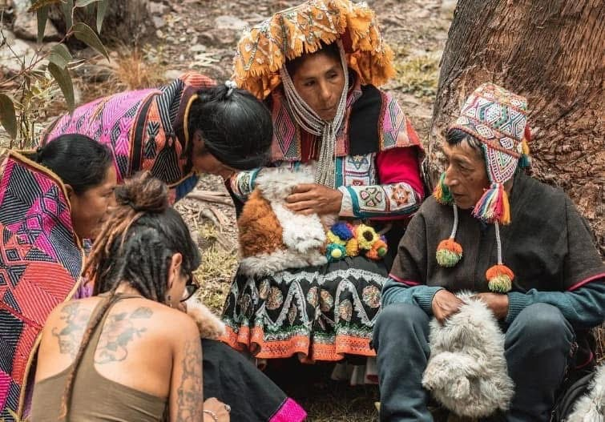
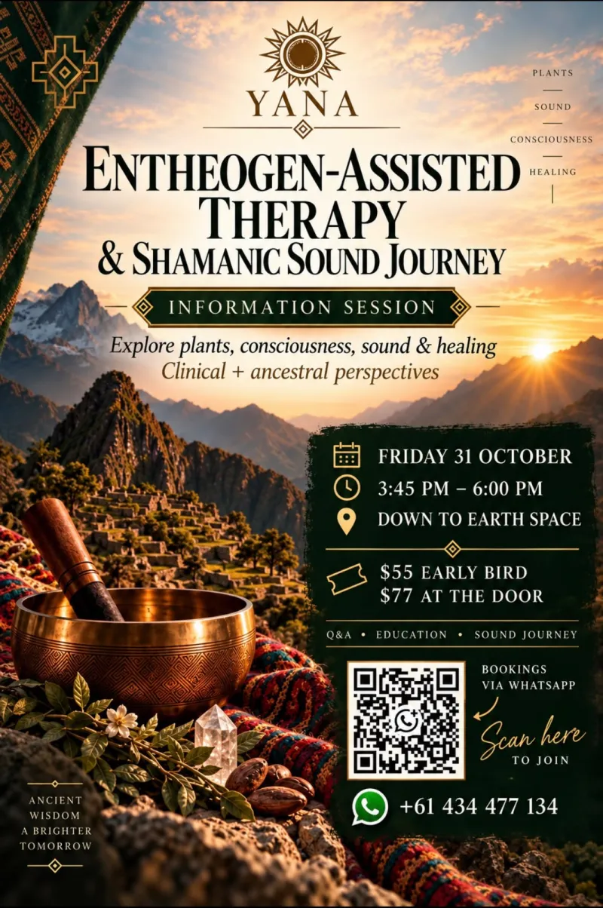
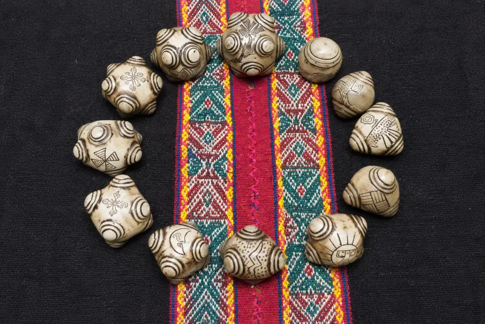
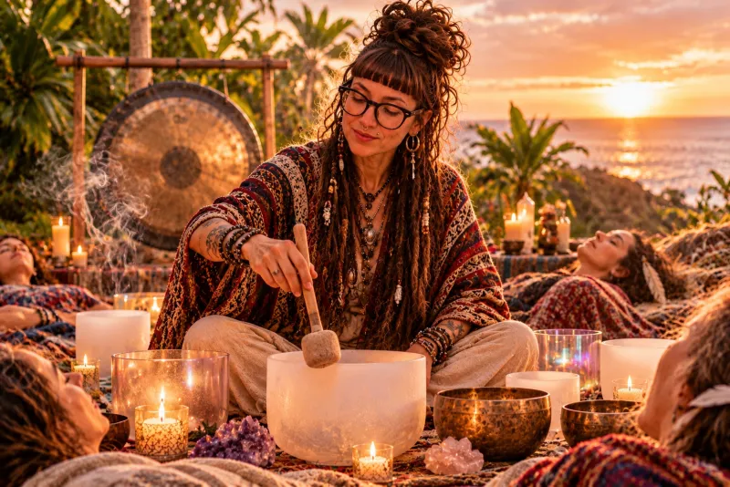
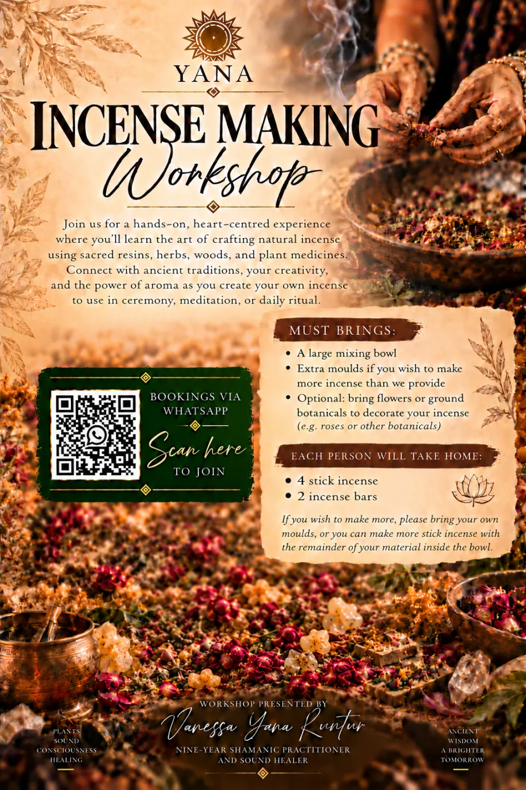
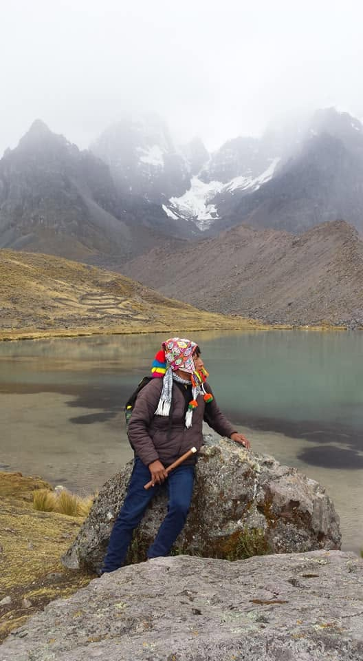
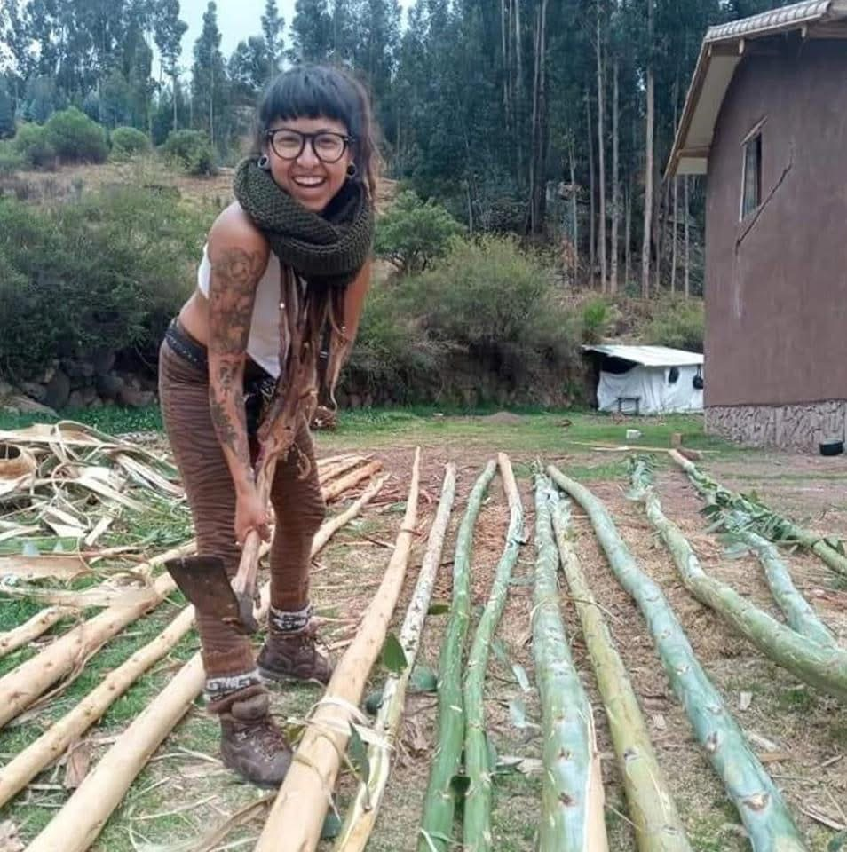

01 · INTAKE ASSESSMENT

Personal consultation
A one-to-one conversation to discuss your needs, ask questions and explore which offering may be a good fit.
Book a consultationA path back to connection
Based in Sydney, Vanessa offers Q’ero-inspired energy work and ceremonial sessions, plus incense-making workshops in Australia and Peru.
In-person sessions in Sydney Workshops in Australia & Peru

Rooted in tradition. Held with care. Guided by the natural world.
Ways to connect
All listed services and prices are for online sessions. In-person sessions may be available depending on location. Please book a consultation to discuss in-person options.
A one-to-one conversation to discuss your needs, ask questions and explore which offering may be a good fit.
Book a consultation
A one-to-one session for personal reflection, spiritual support and life coaching.
Book an individual session
A free masterclass on master plants and science.
View masterclass detailsA 30-minute consultation to discuss concerns and possible next steps. This is not an emergency service.
Book a consultationA wellness session to discuss wellbeing, weight-management and rejuvenation goals.
View booking optionsA 30-minute consultation about psychedelic-assisted therapies and integration.
Book a consultationA one-hour online circle for women to connect and reflect together.
View booking options
A traditional energetic practice inspired by Q’ero teachings and the elements of Earth, Water, Fire and Air.
View booking options
Available for private events, baby showers and corporate events.
Enquire about an event
A 50-minute sound bath with shamanic crystal bowls, for rest and reflection.
View booking options
Explore aromatic plants and create a personal blend for ritual, meditation, prayer or quiet reflection.
View workshops and bookingsEducation in Q’ero Ñusta and Paqo traditions, including Karpay priesthood initiation.
Enquire about training A life in relationship
A life in relationshipMeet your guide
Vanessa “Yana Kuntur” Black Condor is a Sydney-based practitioner of Inca medicine and Q’ero-inspired energy work.
She has seven years of training and experience in South American ancestral medicines, including six years of study with the Apaza family at the Inca Medicine School in Cusco, Peru. Her work draws on nature, the elements and Apus (sacred mountain spirits), alongside the Andean animals Amaru (serpent), Otorongo (jaguar) and Kuntur (condor).
Vanessa has also studied womb-clearing and earth-offering practices with Mama Irma Morales and learned from maestros in Peru and Brazil. She is a co-founder of the Paco Shaman Association, registered in 2022, and is certified by the Waira Qeros Peruvian Paco Shaman Association. Her family roots are Charrúa mestiza from Uruguay.
View services and bookCommunity & spiritual life

Vanessa is a founder of Lanson Alaeq Church of Southern United Native Nations.
The Lanson statue represents Native Nations standing together in unity. In Mochica, Alaeq means “brotherhood.” The church serves Indigenous communities and works to bring them together under one roof.
We work to protect and preserve the living wisdom traditions of the Andes and of Indigenous cultures around the world, and to share them. Inspired by the ancestral teachings of the Q’ero people of Peru and other Indigenous knowledge keepers, we offer a space for spiritual growth, cultural learning, ceremony and connecting with nature.
Our teachings centre on Ayni, sacred reciprocity. Ayni reminds us that all life is interconnected, and that harmony comes from respect, gratitude, balance and service. We honour Pachamama (Mother Earth), the Apus (sacred mountain spirits) and the wisdom Indigenous peoples have carried across generations.
We are inspired by the Prophecy of the Condor and the Eagle, which speaks of a time when the wisdom of the heart and the wisdom of the mind would come together once again. The Condor represents intuition, spirit, compassion and our connection to the Earth. The Eagle represents vision, knowledge, science and the achievements of the modern world. We believe humanity’s future depends on bringing these two paths into balance.
Many young people are concerned about climate change, environmental degradation and social disconnection. We believe Indigenous wisdom and modern science can work together towards a more sustainable future. By living in greater harmony with nature and using knowledge and innovation responsibly, we can help build a healthier relationship with ourselves, our communities and the planet.
People from all backgrounds are welcome to explore the relationship between spirituality, nature, culture and personal transformation. We aim to support the preservation of ancestral wisdom and to help build a future founded on respect, balance, unity and care for all life.
Places & moments





Gather, learn, create
Participants in the sacred incense-making workshops explore aromatic blends for ritual, meditation, prayer and ceremony. Workshops may be hosted in Australia and Peru.
View workshops and bookingsJoin our WhatsApp group for event updates, announcements and discussions, or message Vanessa directly.
WORKSHOPS
Sydney-based
Australia & Peru gatherings
Dates and locations to be shared soon
Begin with a conversation
Choose a service to see its current price, duration and available times. Bookings are handled through Acuity Scheduling.
Choose a service and book IN PERSON IN SYDNEY · WORKSHOPS IN AUSTRALIA & PERU